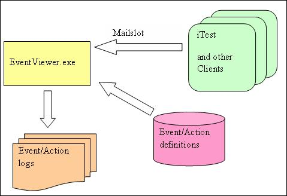
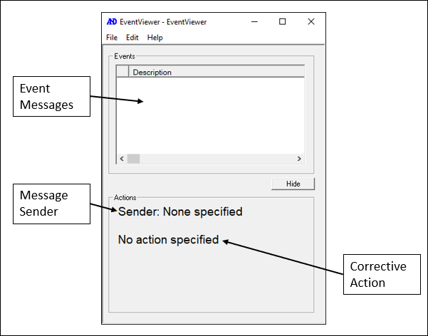
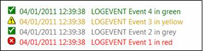
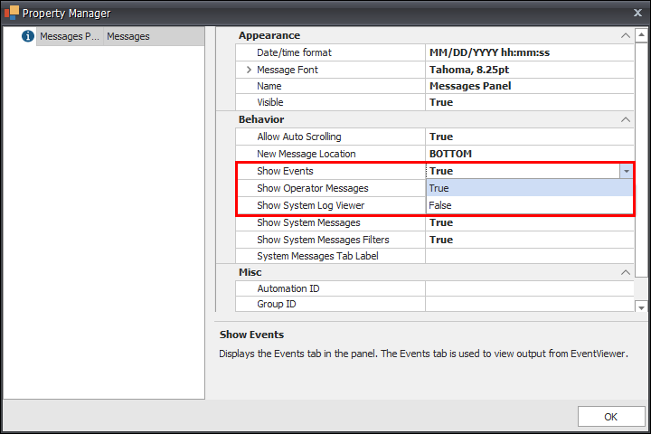
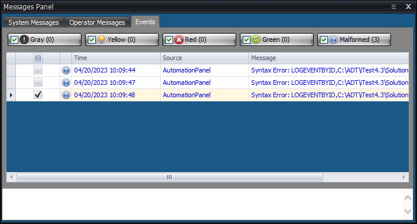

iTest User's Guide
The EventViewer utility allows users to post messages when abnormalities occur during testing. These messages can also include any corrective actions or recommendations to remedy the situation. Messages are sent via mailslot messages; the proper syntax for these messages and the basic system layout are described in this document.
EventViewer Overview

When iTest detects an event, it sends mailslot messages to the EventViewer.exe. EventViewer receives these messages and separates event messages from the corrective action, and then displays the information. Simultaneously, EventViewer writes the incoming mailslot message activity to a log. The Event: Action definitions block shown above is a repository of predefined Event/Action pairs that can be used by EventViewer to interpret incoming messages. For complete details, refer to the Event/Action Description File section.
The EventViewer contains the following properties in its interface:
No action specified string is displayed. EventViewer Interface

Upon startup, the event messages are displayed in the event list. The event list will be populated with previous event messages retrieved from the current and previous logs. The population of this list will happen as follows:
 |
NOTE: | EventViewer will not display when AutomationPanel is running unless MessagesPanelEvents=FALSE in the powertek.ini file. For more information, refer to the Using EventViewer with AutomationPanel section below. |
The following three categories of mailslot messages are supported by the EventViewer:
The syntax of this type of comma-delimited mailslot message is:
LOGEVENT, <message>,<action>,<color>[optional]
User-Defined Mailslot Messages
| LOGEVENT | Mailslot message keyword |
| <message> | The event message to be displayed in the upper list. If the event message has a comma in it, the entire <message> must be enclosed by double quotes. Please refer to the examples below. |
| <action> | Action to be taken to remedy the event. This is shown in the lower list. If the action message has a comma in it, the entire <action> must be enclosed by double quotes. Please refer to the examples below. |
| <color> | Optional parameter. The color that the entry is to be displayed in both events list. If omitted, the message is displayed in red. The supported colors and corresponding icons are shown below: 0 = grey 1 = yellow 2 = red [default] 3 = green  |
If the event message or action message contains a comma, the entire event message and/or action message must be enclosed by double quotes. Please refer to the examples below.
If the syntax of the message is incorrect or if it cannot be properly parsed, the entire mailslot message along with “Syntax error :” in front is added to the Event Messages list in red. The corrective action for that entry is set to:
Please check to make sure that the message is properly constructed.
Example of message only:
LOGEVENT ,Engine coolant temperature is too high, shut the engine down, 2 LOGEVENT, ”Engine, oil and water temp are too high”, shut the engine down, 2
VCL example:
MESSAGE “ \\.\mailslot\EventViewer>> LOGEVENT, ~“Coolant, too hot~”,shut down, 2”
Note the use of the tilde in the above VCL statement. This escape character is used when embedding a double quotation mark within a mailslot message.
The syntax for this type of comma-delimited mailslot message is:
LOGEVENTBYID , <path>,<ID>,<color>[optional]
Predefined Mailslot Messages
| LOGEVENT | Mailslot message keyword |
| <path> | The fully-qualified path to the Event/Action definition file. |
| <ID> | Identifier of the predefined event/action pair in the Event/Action definition file. |
| [color] | Optional parameter. The color that the entry is to be displayed in in the events list. If omitted, the message is displayed in red. This parameter will override any message color settings defined in the EventViewer.ini file, if a custom color is selected. The supported colors and corresponding icons are shown below: 0 = grey 1 = yellow 2 = red [default] 3 = green #IRRGGBB (I is 0-3 for icon, RRGGBB are hex value of RGB) |
Example of message only:
LOGEVENTBYID,C:\action.def,3, 2 LOGEVENTBYID,$SUPPORTDIR\action.def,3, 2 LOGEVENTBYID,$SUPPORTDIR\action.def,3,#3ff00ff
VCL example:
MESSAGE “ \\.\mailslot\EventViewer>> LOGEVENTBYID,$SUPPORTDIR\action.def,3, 2" MESSAGE “ \\.\mailslot\EventViewer>> LOGEVENTBYID,$SUPPORTDIR\action.def,3, #3ff00ff"
The following five messages appear in the event list in green to indicate that they are informational entries only. They are written to the log file.
DIE
Sending this mailslot message terminates the EventViewer application.
MINIMIZE and RESTORE
These messages minimize or restore the EventViewer application to/or from the toolbar. When iTest is minimized, it sends the MINIMIZE message to the Event Viewer. When iTest is restored, it sends the RESTORE message to the Event Viewer. These must be used in pairs. The SHOW and HIDE have no impact. If MINIMIZE is sent, SHOW does not restore the window.
SHOW and HIDE
These messages show or hide the EventViewer application. It moves the EventViewer application window to the front of all windows. These must be used in pairs. The MINIMIZE and RESTORE have no impact. If HIDE is sent, RESTORE does not show the window.
This file is a comma-delimited file that contains any number of lines. Each line represents one Event/Action pair following a unique integer identifier. For example:
101, Engine coolant temperature is too high, shut the end down 102, “Engine, oil and water temp are too high”, shut the engine down 2000, “Engine, oil and water temp are too high”, “Please, shut the engine down!”
This file is used by the pre-defined mailslot message type described earlier in this topic.
The identifier can be any number between 0 and 2,147,483,647. If multiple lines with the same identifier are found, only the first one is valid and the rest cannot be used for logging the event message.
If the event or action message contains a comma, the entire event message and/or action message must be enclosed by double quotes. Please refer to the examples above.
If the syntax of the message is incorrect or if it cannot be properly parsed, the entire mailslot message along with “Syntax error :” is added to the Event Messages list in red and the corrective action for that entry is set to:
Please check to make sure that the message is properly constructed.
Currently, there is no iTest GUI for creating and/or editing these files.
EventViewer is configured via the EventViewer.ini file. This file is an ASCII text file in the format of Keyword=value. When changes are made to this file, EventViewer must be restarted for the changes to take effect. The entries in this file are not case sensitive. It can be accessed directly from the EventViewer GUI by selecting Edit > Configuration from the menu bar. The supported keywords are detailed in the table below:
EventViewer Supported Keywords
| Keyword | Description | Notes |
| Logpath | This is the fully-qualified path to where the log files are to be stored. It does not contain the name of the log itself. The log names are automatically generated as described in the Log File Naming Convention section below. The $SUPPORTDIR macro is supported in the EventViewer.ini file; by using this macro, you do not need to edit the Logpath entry when a new solution is selected in iTest. |
The EventViewer application must be restarted when the solution is changed. |
| Language | This entry sets the target language and is used to set the time stamp format that is added to each entry placed into the event message list. Time is presented in a 24-hour format. The currently supported languages and their time stamp formats are as follows: English: MM/DD/YYYY HH:MM:SS Japanese: YYYY/MM/DD HH:MM:SS |
This entry does not apply when AutomationPanel is running and MessagesPanelEvents=TRUE; it will default to the English time stamp format. |
| MaxMessageCount | This entry defines the maximum number of entries displayed in the event message list. Once the number of messages exceeds the value, the oldest message is removed when a new message is added in a first in first out (FIFO) manner. | - |
| SaveFileDuration | This is the length in time (in months) that log files are saved. Once this duration has been exceeded, the oldest log is deleted when a new log is created. For example, assuming SaveFileDuration=6, and six montly logs have been saved for January through June, the log for January will be deleted when a new log is created on July 1st. When a log is soon to be deleted, a notification is sent to the user. Users are also notified that the SaveFileDuration setting can be lengthened to avoid this from happening in the future. There is no restriction on the duration of time in which files can be saved.A situation can occur when SaveFileDuration is substantially shortened, where several monthly logs are deleted. For example, if SaveFileDuration was previously set to 60 and 48 monthly logs were saved, then changing SaveFileDuration to 12 will result in the deletion of 36 monthly logs upon creation of a new log. Prior to the deletion of the old logs, users are notified as to the number of logs that are about to be deleted and given the opportunity to cancel the operation.If this value is set to 0, then log files will not be deleted. Log file rotation takes place at the application startup time. |
- |
| PopOnEvent | When set to TRUE, the EventViewer application will be restored and brought to the front of all other applications when a new event is received. By default, this is set to TRUE. | This entry does not apply when AutomationPanel is running and MessagesPanelEvents=TRUE. |
| ShowInfoMsgs | When set to TRUE, the EventViewer application will show all incoming mailslot messages. By default, this is set to FALSE. | - |
| HeartBeatChannel | This is the user-specified application heartbeat channel (e.g., voEVHeartBeat). By convention, it is iTest's responsbility to ramp this value, and EventViewer's responsibility to set it to zero. If no channel is specified, then EventViewer does nothing. |
- |
| EventCountChannel | This is the user-specified application event count channel (e.g., voEVEventCt). For all new, incoming mailslot messages, this value is incremented by one. If no channel is specified, then EventViewer does nothing. |
- |
| MalformedEventCountChannel | This is the user-specified application malformed event count channel. For all new, incoming mailslot messages that have syntax errors or can otherwise not be properly parsed, this value is incremented by one. If no channel is specified, the EventViewer does nothing. | - |
| Message Color Settings | You can define message colors for different event types. - EventType0Color: Normal message; default is gray. - EventType1Color: Warning message; default is yellow. - EventType2Color: Error message; default is red. - EventType3Color: Internal messages (e.g., Maximize, Restore, or Message) indicates an OK state; default is green. - EventType4Color: Syntax error message; default is red. The color value must be a hex value starting with # (e.g., EventType0Color=#888888). |
This entry does not apply when AutomationPanel is running and MessagesPanelEvents=TRUE. |
| Message Font Size | You can define the message font point size using the following entries:ItemFontSize=<Numeric Value> MsgFontSize=<Numeric Value> ItemFontSize is for the message list (upper list), and MsgFontSize is for the message detail text boxes (lower list). |
These entries do not apply when AutomationPanel is running and MessagesPanelEvents=TRUE. |
| EventViewer_SelectNewItem | When set to TRUE, the newest event in the list will be highlighted. By default, this is set to FALSE. | This entry does not apply when AutomationPanel is running and MessagesPanelEvents=TRUE. |
Below is an example of the EventViewer.ini file:
logpath=$SUPPORTDIR\logs language=english maxmessagecount=20 savefileduration=3 poponevent=TRUE showinfomsgs=FALSE heartbeatchannel=voEVHeartBeat eventcountchannel=voEVEventCt malformedeventcountchannel=voEVBadEventCt ShowActionSection=TRUE
The log files are ASCII text files that contain all of the Event messages and corrective actions along with the time stamp of when they were originally received. This information is stored in a comma-separated format. The entries in this file are written as follows:
“Timestamp”, “Message Keyword”, “Event Message”, “Corrective Action” ,”color”, “message sender”{CRLF}
Where CRLF is a carriage return line feed.
For example:
"03/31/2011 13:22:31", "LOGEVENT", "Event 1 in red", "Action 1", "2", "AUTOTEST"
It is important to note that if either the event or action has a comma in it the entire event and/or action must be enclosed in double quotes. The quotes will also be written to file as shown below:
"03/31/2011 13:22:31", "LOGEVENT", "”Event 1, in red”", "”Action, 1”", "2", "AUTOTEST"
The writing of LOGEVENT and LOGEVENTBYID messages are handled slightly differently. The LOGEVENT messages are written as they are received. For example:
"03/31/2011 13:22:31", "LOGEVENT", "Event 1 in red", "Action 1", "2", "AUTOTEST"
LOGEVENTBYID messages are handled differently due to their dependence on an external event/action definition file. Rather than writing these messages to a file as they are received, the file name and index are first converted to their corresponding event/action pair and this information is then written to the file. For example, let's assume that the following mailslot message is sent to the Event Viewer:
"\\.\mailslot\EventViewer>>LOGEVENTBYID,$SUPPORTDIR\eventaction.def, 11, 2”
Assume that index 11 within the eventaction.def file is as shown:
11, predefined event number 11, predefined action number 11 from eventaction.def
After this message is processed, the following will be written to file:
"04/01/2011 10:24:51", "LOGEVENTBYID", "predefined event number 11", " predefined action number 11 from eventaction.def", "2", ""\\.\mailslot\Softpanel"
This was done to break the dependence of archival event messages on the event/action definition files. If this were not done and the definition file was changed or deleted, it would not be possible to re-create these messages and display them.
The names of the log files will conform to this standard:
EventViewer_YYYY_MM.log
Example:
EventViewer_2015_02.log
Given the relatively low number and frequency of incoming mailslot messages, the log file will be written as the messages are arriving. This guarantees that, given some sort of error, the historical messages are preserved.
There are certain situations when entries will not be written:
Situations
| Situation | Description |
| Non-event Messages | Only the LOGEVENT and LOGEVENTBYID mailslot messages will be logged. All other mailslot messages and miscellaneous activity that appears in the event list will not be written to file. |
| Improperly Formed Messages | Mailslot messages that do not conform to the syntax in this topic will still be displayed in the event message list. Even though they are displayed along with an appropriate corrective action, these entries will not be written to file. |
By default, EventViewer does not display when AutomationPanel is running. This is due to the default value of the MessagesPanelEvents powertek.ini setting, which is TRUE. In order to view event messages, set the Show Events property to TRUE in the Messages panel property manager. This will display the Events tab.
Show Events Property

Messages Panel - Events Tab
